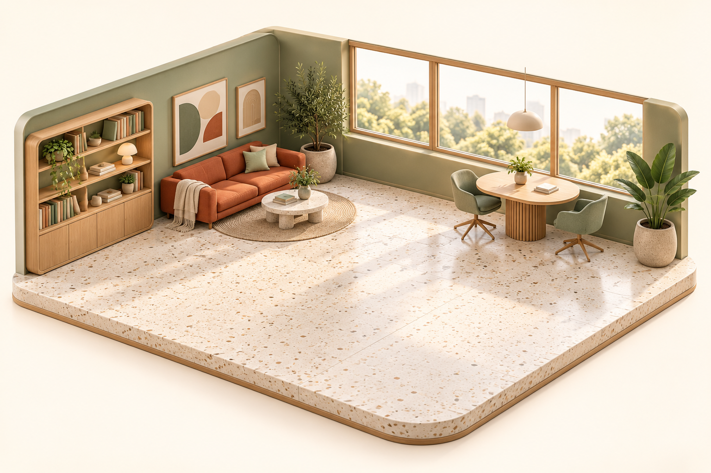

A GOOD DAY TO MAKE SOMETHING
오늘도, 함께 해볼까요?
생각을 나누고, 작은 일부터 차근차근 완성해요.

오피스 이미지를 불러오지 못했어요.
동료 선택과 업무 패널은 계속 사용할 수 있어요.
STUDIO 01 · DAYLIGHT
동료 선택과 업무 패널은 계속 사용할 수 있어요.
동료를 선택하면 업무 패널에서 일을 맡길 수 있어요.
함께 완성한 기록
이 탭에서만 보관첫 번째 기록을 기다리고 있어요.동료에게 작은 업무 하나를 맡겨보세요.